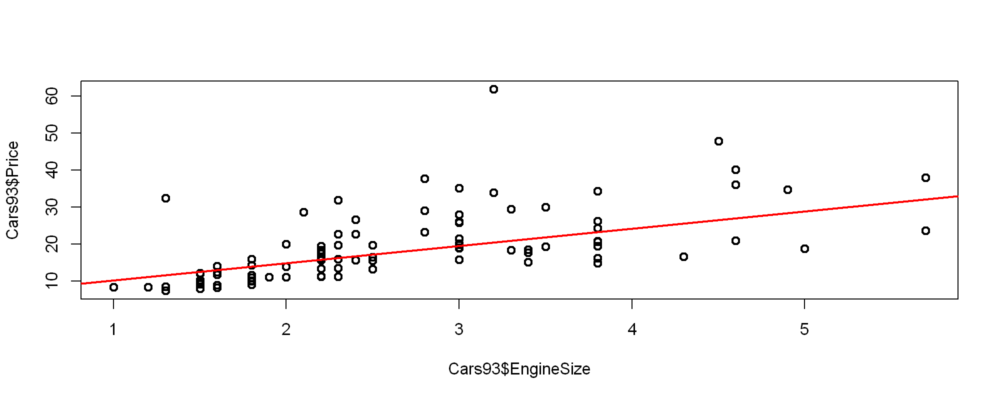

#collapse-hide
library(MASS)
library(lmtest) ## 더비왓슨 테스트를 위함
library(tidyverse)
select <- dplyr::select선형회귀분석 기초 (RFD)
R
선형회귀분석 기초
변수들간의 인과관계를 밝히고 모형을 적합하여 관심 있는 변수를 예측하거나 추론하기 위해 사용하는 분석기법
선형회귀분석의 가정
- 오차의 등분산성
- 오차의 독립성
- 오차의 정규성 :
Q-Q plot,Kolmogorov-Smirnov 검정,Shapiro-Wilk검정을 확인하여 정규성을 확인한다.
회귀분석 시 검토사항
0. 회귀모형이 통계적으로 유의한가 확인
1. 모형 내의 개별 회귀계수에 대한 검정
2. 모형에 설명력 \(R^2\)값을 통해 확인, 독립변수의 수가 많아지면 \(adj-R^2\) 값을 확인
3. 잔차 plot을 통해 모형의 진단
4. 다중공선성의 확인 (10이상이면 다중공선성이 존재한다고 판단.) \(\to\) car 패키지의 vif 함수 이용
5. 잔차분석
R실습 - 단순선형회귀분석
Cars93 데이터의 엔진크기(EngineSize)를 독립변수, 가격(Price)를 종속변수로 선정하여 단순 선형회귀분석을 실시한 후, 추정된 회귀모형에 대해 해석해보자.
#collapse-hide
fit1 <- lm(Price~EngineSize,data=Cars93)
summary(fit1)
Call:
lm(formula = Price ~ EngineSize, data = Cars93)
Residuals:
Min 1Q Median 3Q Max
-13.684 -4.627 -1.795 2.592 39.429
Coefficients:
Estimate Std. Error t value Pr(>|t|)
(Intercept) 4.6692 2.2390 2.085 0.0398 *
EngineSize 5.5629 0.7828 7.107 2.59e-10 ***
---
Signif. codes: 0 '***' 0.001 '**' 0.01 '*' 0.05 '.' 0.1 ' ' 1
Residual standard error: 7.789 on 91 degrees of freedom
Multiple R-squared: 0.3569, Adjusted R-squared: 0.3499
F-statistic: 50.51 on 1 and 91 DF, p-value: 2.588e-10#collapse-hide
plot(Cars93$EngineSize,Cars93$Price,lwd=2)
abline(a=coefficients(fit1)[2],b=coefficients(fit1)[1],col="red",lwd=2)
#collapse-hide
par(mfrow=c(1,2))
plot(fit1,1); plot(fit1,2)
#collapse-hide
shapiro.test(resid(fit1))
Shapiro-Wilk normality test
data: resid(fit1)
W = 0.85365, p-value = 3.886e-08#collapse-hide
dwtest(fit1,alternative="two.sided")
Durbin-Watson test
data: fit1
DW = 1.1716, p-value = 2.236e-05
alternative hypothesis: true autocorrelation is not 01. 모형과 추정된 회귀계수는 모두 통계적으로 유의하다.
2. 결정계수값과 수정된 결정계수 값이 각각 0.3569, 0.3499 로 산출되었다.
3. F-통계량의 근거한 p-value값을 보아도 생성된 모델은 통계적으로 유의하다.
4. 잔차 plot 을 그려본 결과 오차항의 정규성과 독립성 가정이 위배된 것 같다. * 실제로 test 결과 위배되었다는 결론이 통계적으로 유의미했다.
5. 따라서 모형의 식별 단계로 돌아가 새로운 모형을 적합할 필요가 있어보인다.
#collapse-hide
test <- Cars93 %>% select(EngineSize) %>% sample_n(5)#collapse-hide
predict(fit1,test,interval="none") ##점추정- 1
- 23.0268912710567
- 2
- 16.9076569678407
- 3
- 24.1394793261868
- 4
- 25.8083614088821
- 5
- 23.5831852986217
#collapse-hide
predict(fit1,test,interval="confidence") # 회귀계수에 대한 신뢰구간을 고려한 구간
predict(fit1,test,interval="prediction") # 회귀계수에 대한 신뢰구간과 오차항을 고려한 구간| fit | lwr | upr | |
|---|---|---|---|
| 1 | 23.02689 | 21.14536 | 24.90842 |
| 2 | 16.90766 | 15.14623 | 18.66909 |
| 3 | 24.13948 | 22.07834 | 26.20061 |
| 4 | 25.80836 | 23.42653 | 28.19019 |
| 5 | 23.58319 | 21.61595 | 25.55043 |
| fit | lwr | upr | |
|---|---|---|---|
| 1 | 23.02689 | 7.441846 | 38.61194 |
| 2 | 16.90766 | 1.336654 | 32.47866 |
| 3 | 24.13948 | 8.531732 | 39.74723 |
| 4 | 25.80836 | 10.155035 | 41.46169 |
| 5 | 23.58319 | 7.987560 | 39.17881 |
R실습 - 중회귀분석
iris 데이터를 사용
R에lm함수는 범주형 변수를 자동으로 더미변수로 변환해줌
#collapse-hide
fit2 <- lm(Petal.Length~.,data=iris)
summary(fit2)
Call:
lm(formula = Petal.Length ~ ., data = iris)
Residuals:
Min 1Q Median 3Q Max
-0.78396 -0.15708 0.00193 0.14730 0.65418
Coefficients:
Estimate Std. Error t value Pr(>|t|)
(Intercept) -1.11099 0.26987 -4.117 6.45e-05 ***
Sepal.Length 0.60801 0.05024 12.101 < 2e-16 ***
Sepal.Width -0.18052 0.08036 -2.246 0.0262 *
Petal.Width 0.60222 0.12144 4.959 1.97e-06 ***
Speciesversicolor 1.46337 0.17345 8.437 3.14e-14 ***
Speciesvirginica 1.97422 0.24480 8.065 2.60e-13 ***
---
Signif. codes: 0 '***' 0.001 '**' 0.01 '*' 0.05 '.' 0.1 ' ' 1
Residual standard error: 0.2627 on 144 degrees of freedom
Multiple R-squared: 0.9786, Adjusted R-squared: 0.9778
F-statistic: 1317 on 5 and 144 DF, p-value: < 2.2e-16#collapse-hide
dwtest(fit2,alternative="two.sided")
Durbin-Watson test
data: fit2
DW = 1.6772, p-value = 0.03042
alternative hypothesis: true autocorrelation is not 0#collapse-hide
shapiro.test(resid(fit2))
Shapiro-Wilk normality test
data: resid(fit2)
W = 0.99389, p-value = 0.78#collapse-hide
library(car)
vif(fit2)| GVIF | Df | GVIF^(1/(2*Df)) | |
|---|---|---|---|
| Sepal.Length | 3.736705 | 1 | 1.933056 |
| Sepal.Width | 2.648127 | 1 | 1.627307 |
| Petal.Width | 18.496973 | 1 | 4.300811 |
| Species | 28.551416 | 2 | 2.311569 |
최적회귀방정식의 선택
가. 단계적 변수선택(Stepwise Variable Selection)
1. 전진 선택법 (forward selection) : 절편만 있는 상수모형에서 시작하여 중요하다고 생각되는 설명변수부터 차례로 추가한다.
2. 후진 제거법 (backward elimination) : 모든 독립변수를 포함한 모형에서 출발하여 종속변수에 가장 적은 영향을 주는 변수부터 하나씩 제거하면서 더 이상 제거할 변수가 없을 때의 모형을 선택한다.
3. 단계적 방법 (stepwise method) : 전진선택법에 의해 변수를 추가하면서 새롭게 추가된 변수에 의해 기존 변수의 중요도가 약화되면 해당변수를 제거한다.
나. 벌점화된 선택기준
- 모형의 복잡도에 따라 벌점을 주는 방식으로 \(AIC, BIC\) 값이 주로 사용된다.
R실습 : 다중회귀모형 + 변수선택법
#collapse-hide
fit3 <- step(lm(Price~ EngineSize +Horsepower +RPM + Width + Length + Weight,Cars93),direction = "both")
summary(fit3)Start: AIC=322.11
Price ~ EngineSize + Horsepower + RPM + Width + Length + Weight
Df Sum of Sq RSS AIC
- EngineSize 1 1.69 2556.1 320.17
- RPM 1 19.71 2574.1 320.82
<none> 2554.4 322.11
- Length 1 119.55 2674.0 324.36
- Weight 1 209.73 2764.2 327.45
- Width 1 585.01 3139.4 339.29
- Horsepower 1 720.84 3275.3 343.22
Step: AIC=320.17
Price ~ Horsepower + RPM + Width + Length + Weight
Df Sum of Sq RSS AIC
- RPM 1 49.36 2605.5 319.95
<none> 2556.1 320.17
+ EngineSize 1 1.69 2554.4 322.11
- Length 1 140.92 2697.0 323.16
- Weight 1 208.09 2764.2 325.45
- Width 1 593.56 3149.7 337.59
- Horsepower 1 1476.65 4032.8 360.57
Step: AIC=319.95
Price ~ Horsepower + Width + Length + Weight
Df Sum of Sq RSS AIC
<none> 2605.5 319.95
+ RPM 1 49.36 2556.1 320.17
+ EngineSize 1 31.34 2574.1 320.82
- Length 1 132.02 2737.5 322.54
- Weight 1 279.31 2884.8 327.42
- Width 1 562.10 3167.6 336.12
- Horsepower 1 1898.74 4504.2 368.86
Call:
lm(formula = Price ~ Horsepower + Width + Length + Weight, data = Cars93)
Residuals:
Min 1Q Median 3Q Max
-14.956 -2.578 -0.182 2.114 28.448
Coefficients:
Estimate Std. Error t value Pr(>|t|)
(Intercept) 53.005861 16.532269 3.206 0.00188 **
Horsepower 0.129653 0.016190 8.008 4.46e-12 ***
Width -1.480623 0.339813 -4.357 3.56e-05 ***
Length 0.152968 0.072440 2.112 0.03755 *
Weight 0.007339 0.002389 3.071 0.00283 **
---
Signif. codes: 0 '***' 0.001 '**' 0.01 '*' 0.05 '.' 0.1 ' ' 1
Residual standard error: 5.441 on 88 degrees of freedom
Multiple R-squared: 0.6965, Adjusted R-squared: 0.6827
F-statistic: 50.48 on 4 and 88 DF, p-value: < 2.2e-16